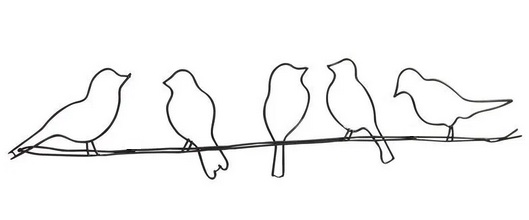

I remembered reading that the smallest bird could travel thousands of miles across the Pacific unencumbered and alone, needing only one piece of baggage; one possession ... a twig. He could carry the twig in his beak and when he got tired he simply descended to the sea and floated on it until he was ready to move on again. He fished from the twig, ate from the twig, and slept on the twig. Who needed the Queen Mary ? He flapped his wings, clamped his life raft in his mouth and set out to see more of the world.
-Shirley MacLain, Out on a Limb